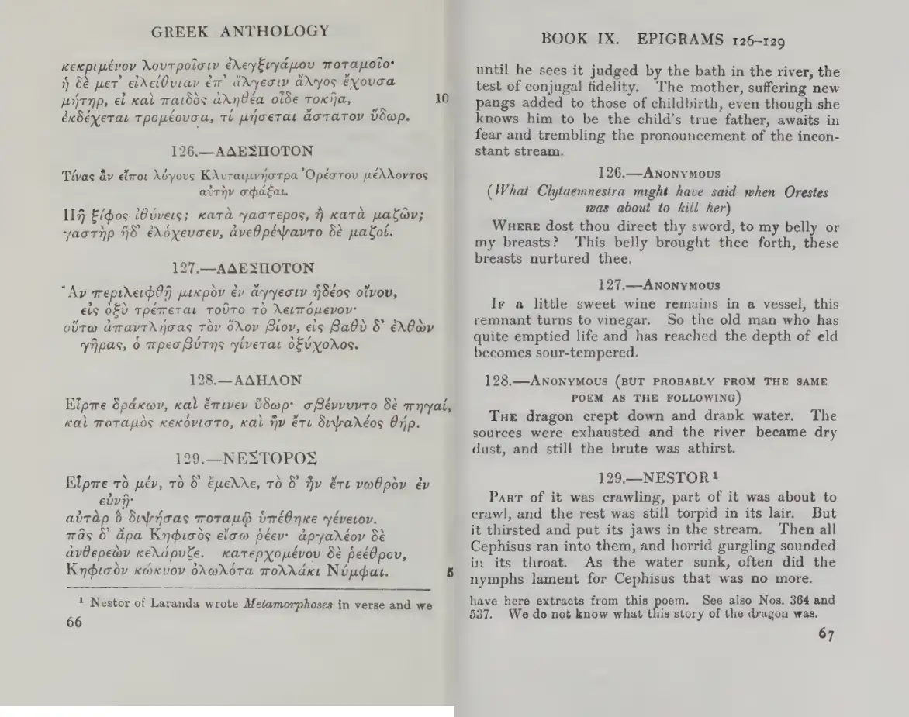

126.—ANONYMOUS
(What Clytaemnestra might have said when Orestes was about to kill her)
WHERE dost thou direct thy sword, to my belly or my breasts? This belly brought thee forth, these breasts nurtured thee.
Book 9 · epigrams 126–129

Click the scan to open it at full resolution. The left page is Greek; the facing page is English. The first spread may also include introductory page 1.
WHERE dost thou direct thy sword, to my belly or my breasts? This belly brought thee forth, these breasts nurtured thee.
If a little sweet wine remains in a vessel, this remnant turns to vinegar. So the old man who has quite emptied life and has reached the depth of eld becomes sour-tempered.
THE dragon crept down and drank water. The sources were exhausted and the river became dry dust, and still the brute was athirst.
PART of it was crawling, part of it was about to crawl, and the rest was still torpid in its lair. But it thirsted and put its jaws in the stream. Then all Cephisus ran into them, and horrid gurgling sounded in its throat. As the water sunk, often did the nymphs lament for Cephisus that was no more.
Green = corrected reading; red strikethrough = current XML reading.
| Unit | Reading | Evidence | Reason |
|---|---|---|---|
| 9.126 line | πῇ ξίφος ἰθύνεις; κατὰ γαστέρος, ἢ κατὰ μαζῶν;πῇ ξίφος ἰθύνεις; κατὰ γαστέρος, ἢ κατὰ μαζῶν; | other confidence 0.95; Hathi supports | The printed line begins with a capital Πῇ as an initial display capital; the XML already uses lowercase πῇ, which is the correct normalized form. No correction is needed. |
| 9.128 author | NestorΝέστορος | other confidence 0.9; Hathi supports | The printed heading for epigram 128 reads ΝΕΣΤΟΡΟΣ (genitive of Νέστωρ), while the XML author field gives the Latinized nominative 'Nestor'. The heading is a proper name, so initial capitalization is retained. |